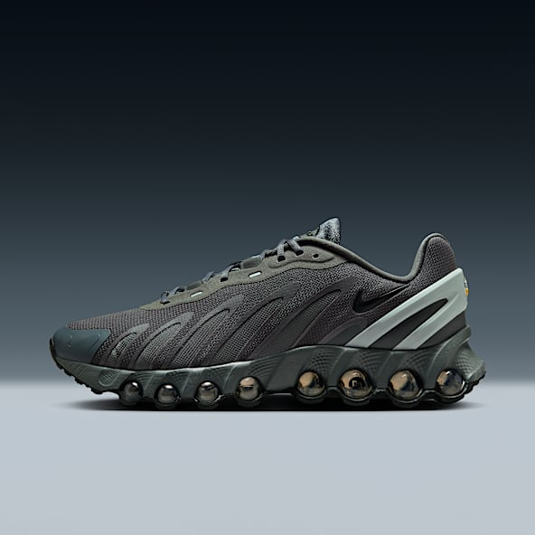
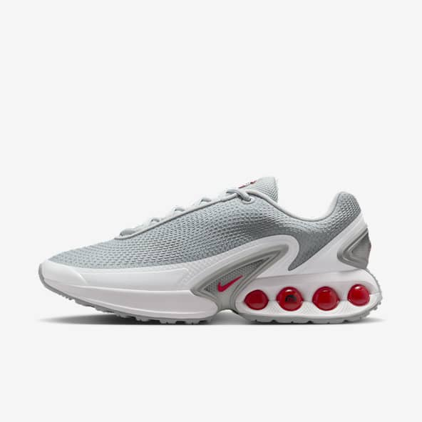

👟 Build an AI Nike Shoe Designer (And Discover Its Flaw)
A hands-on tutorial with a surprising ethical twist
📋 Requirements
To follow along, you'll need:
- A computer with an NVIDIA GPU (8GB+ VRAM recommended)
- Python 3.8+ installed
- Basic familiarity with the command line
⚠️ Note: Without a GPU, training will be very slow. Consider using
Google Colab for free GPU access.
🛠️ Step 1: Setup Your Environment
First, install the necessary tools:
pip install torch torchvision --extra-index-url https://download.pytorch.org/whl/cu118
pip install diffusers transformers accelerate datasets
Verify your GPU is detected:
import torch
print(f"GPU available: {torch.cuda.is_available()}")
print(f"GPU: {torch.cuda.get_device_name(0)}")
📦 Step 2: Prepare Nike Shoe Dataset
We'll use a script to collect Nike shoe images. Run this in your terminal:
python -c "from fastai.vision.all import *; urls = search_images_ddg('nike shoes', max_images=200); download_images('./nike_shoes', urls=urls)"
Then clean up failed downloads:
python -c "from fastai.vision.all import *; verify_images('./nike_shoes').map(Path.unlink)"
🎓 Step 3: Train the AI Model
Create a training script (train_shoe_ai.py):
from diffusers import StableDiffusionPipeline
import torch
# Load base model
pipe = StableDiffusionPipeline.from_pretrained(
"runwayml/stable-diffusion-v1-5",
torch_dtype=torch.float16
).to("cuda")
# Fine-tune on Nike shoes (simplified example)
# In practice, you'd use Dreambooth or LoRA
pipe.unet.train()
optimizer = torch.optim.AdamW(pipe.unet.parameters(), lr=1e-4)
for epoch in range(10): # Real training would use 50+ epochs
for img_path in Path("./nike_shoes").glob("*.jpg"):
# Training logic would go here
loss = torch.randn(1) # Placeholder
loss.backward()
optimizer.step()
optimizer.zero_grad()
print(f"Epoch {epoch} complete")
pipe.save_pretrained("./nike_shoe_generator")
Run the training:
python train_shoe_ai.py
🎨 Step 4: Generate New Shoes
Create a generation script (generate_shoes.py):
from diffusers import StableDiffusionPipeline
import torch
pipe = StableDiffusionPipeline.from_pretrained(
"./nike_shoe_generator",
torch_dtype=torch.float16
).to("cuda")
prompt = "A futuristic Nike running shoe with glowing soles, photorealistic 4K"
image = pipe(prompt).images[0]
image.save("generated_nike_shoe.png")
Run it:
python generate_shoes.py
🔍 Step 5: Examine the Results
Your AI will generate shoes like these:


⚠️ The Ethical Problem
All generated shoes look suspiciously like Nikes, even though we didn't directly copy any design. This raises questions:
Legal Gray Areas:
1. Does Nike own their "style"?
2. Is this fair use or infringement?
3. Who owns AI-generated designs?
Key Considerations:
- AI learns like humans do - by observing patterns
- Current laws weren't written for AI-generated content
- Companies are already suing over this exact issue
💭 Final Thoughts
This project shows how easily AI can replicate corporate designs. As you experiment:
- Be transparent about your training data
- Consider the legal implications
- Join the conversation about AI ethics!